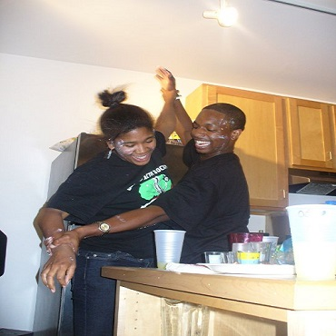
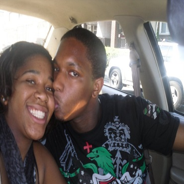
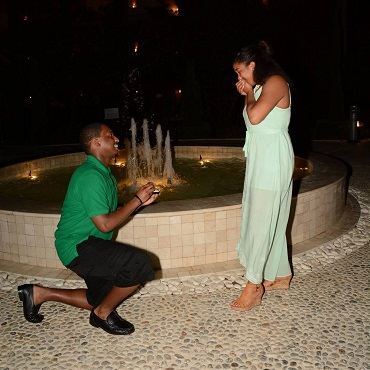

WE' VE MET
Chaunda was a freshman at the University of Pittsburgh in 2009. She was a young adult trying to find herself and along the way she joined the best student led organization F.O.C.U.S where upperclassmen were mentors to the freshmen to help them transition into college. She saw this junior,
Vince, majoring in computer science every time she entered the room because he was signing all the freshmen into the computer. Even though, he was the greeter, he rarely spoke because he always had headphones in his ears and always wore sweatpant pants (I guess he was playing hard to get). With encouragement from a friend, Chaunda asked him for his number because she thought he was cute and everyone was raving about how he was such an amazing guy. She knew thats what she needed in her life (plus, she loved his smile). After she got his number, they spent their first real interaction being waiters at a student led event where they cracked jokes with each other all night and he even saved her a piece of cheesecake by the end of the night (she knew he was a keeper). It eventually led to us somehow putting icing on each others face at a friends party shortly after, and the rest is history.

FIRST DATE
At the time they thought they were doing it big by going out to Olive Garden as their first date. They had both just finished their last final exams for the year and Vince had asked Chaunda to be his girlfriend officially. So what better way than to go out to eat before she had to go back to North Carolina for the summer. The food was great and it was a time where they both couldn't stop smiling and laughing with each other. The picture says it all about how much they were infactuated with each other from the beginning. But the kiss on the cheek doesn't come close to demonstrating how the first kiss happened. It was the night before Vince's 21st birthday where she met him at Szechuan Express, the Chinese Restaurant, where he prepared his stomach for a night of torture. Chaunda went in to kiss Vince (it was about 80% her and 20% him) and she had onion breath from the food she ordered. She was so embarassed, but Vince was such in awe how much this girl was showing him all this attention. Which in turn made him even more sure that this woman was the one for him. As for the first date, Chaunda once again blew him away by footing the bill.

ENGAGEMENT
On Thursday, April 16, 2015 during a trip to Montego Bay, Jamaica for a friends' wedding, Vince decided it was time to move to the next level after 5 amazing years with the woman he loved. He had designed the perfect ring for his future fiancee with the approval of his groomsmen, but it was an unforgettable moment in such a romantic place. Vince was extremely nervous the entire night. He decided to propose after a candlelit dinner with authentic Jamaican food. Vince couldn't eat anything and Chaunda barely noticed. She was eating all of her food and trying to hold conversation while Vince constantly placed his hand on his lap and kept avoiding eye contact. Vince saw a professional photographer walking up to couples during dinner and came up with the idea to get the proposal on camera. After dinner, Vince had proposed the idea that they have a photoshoot since Chaunda always complained that they didn't have any photos of them in the house. As soon as the photographer paused and pointed at Vince, he was on one knee. All you could see were tears coming from Chaunda's eyes and her reaction was "ARE YOU SERIOUS?!" But Vince couldn't have been more serious because he had always said that if they could make it 5 years he was going to marry her.